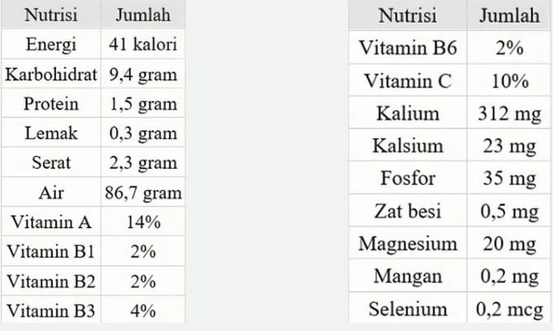

Dirancang oleh KKN 96 ASTOMULYO.
Berikut adalah kandungan nutrisi dalam bawang merah per 100 gram:  Bawang merah mengandung berbagai senyawa yang memberikan manfaat kesehatan dan aroma khas, termasuk : minyak atsiri, sikloaliin, metilaliin, dihidroaliin, flavoglikosida, saponin, peptida, dan fitohormon
1. Siapkan alat dan bahan :
2. Cuci kulit bawang merah :
3. Rajang dan pisahkan dari pengotor nya:
4. Keringkan di bawah sinar matahari:
5. Campurkan kulit bawang merah dengan air di dalam ember (100gr : 500ml):
6. Aduk dan diamkan semalaman:
7. Saring campuran air dan kulit bawang merah menggunakan kain saring dan corong:
6. Aduk dan diamkan semalaman:
7. Saring campuran air dan kulit bawang merah menggunakan kain saring dan corong: